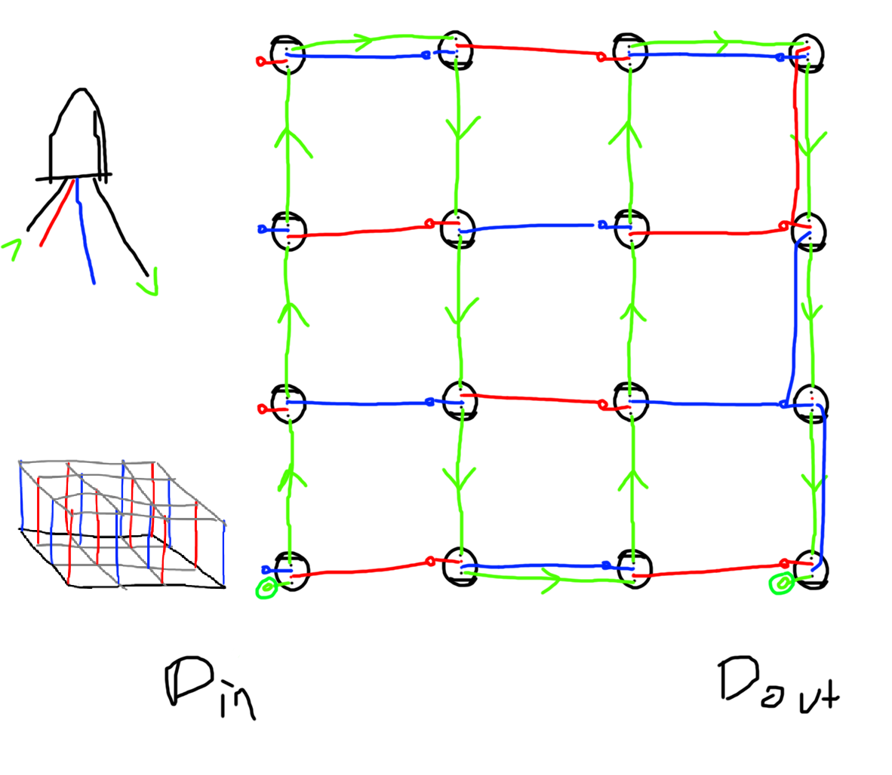

Chris Raff
LED Cube
I built this with Alex Lamson for the CICS 290m class, a class that was new at the time which exposes computer science students to working with hardware and microcontrollers. This project certainly went beyond the requirements for the final project. Since it's completion, we have demoed the cube several times at CS events and we continue to program new patterns and visualizations for it.
This website documents the construction of the cube (open with caution, it's a very large webpage)
You can also view the GitHub repo for the code that drives the visualizations on the cube
Revolutionary Wiring Scheme
When looking around at how other people built LED cubes, it was commonplace to deliver power to the LEDs by running one 5V and one G wire per column of LEDs. Since one column of LEDs requires wire of about 20 cm from base to top and there are 64 columns, this would've meant 2 * 64 * 20 cm = 25.6 meters of wire! I was able to come up with a wiring scheme that used only one wire per column by alternating 5V and G and having LEDs bridge from their column to a neighbouring column on one axis. This halved the material required while also reducing visual clutter, weight and construction time. Here is a rough first sketch of the power delivery solution:
As demonstrated on the right side, things do get a bit cluttered at one edge (to the point that I failed to draw a connection) but I believe this one drawback is worth it and it didn't actually create much of a problem when building.
There is one small disclaimer to make about this wire scheme, which is that it seems to be creating some voltage spike problems that can corrupt the data signal that drives the neopixels. This seems to be the reason that the final layer of LEDs sometimes flashes, a problem that had no clear source until now. When I have more time, I hope to explore solutions. The data sheet for the LEDs says you're supposed to include a small capacitor in parallel with each LED, a step that we were eager to ignore when building the cube. It apparently doesn't suffice to just put a large capacitor in parallel with the whole thing.
Programming
An arduino chip drives the cube, specifically a Wemos R1 mini. This chip is a great chip all around - it's based on the ESP8266 so it's clock speed is fast by default and can go up to 160Mhz, it has a lot of memory which is critical since 512 colors need to be in memory at the very least, and it's tiny. Some of the demos run on data delivered over serial to the arduino, but I find this is ineffective for streaming the entire image to the cube since it's slow and prone to corruption. I prefer to do as much of the work as possible on the arduino side to keep it fast and independent.
I acquired several ESP32 chips, which is an improved version of the ESP8266. It has 2 cores, and fancy hardware for faster floating point operations. Sadly, I haven't been able to get it to work with the cube yet since the signal it produces to drive the lights seems much more prone to corruption. By default, it tries to drive all four LED data pins at once (which would be really impressive if it worked) but it seems that this creates some odd voltage spikes. The framerate is really impressive, though, and I hope to get it working eventually.
The FastLED library is superior to Adafruit's neopixel library in many ways, and I can't endorse it enough. It lets you access the array of pixels in memory directly which is quite handy, it lets you specify colors by hue in addition to RGB, and it includes many convenient and efficient math functions.
It took quite a while to get all the demos to run smoothly, but the main takeaways are:
- Trigonometry operations like cosine and sine are extremely slow. FastLED fortunately includes approximations that run much faster and serve just as well in nearly all cases, so this is an easy problem to solve.
-
Square roots are also very slow. Whenever possible, my code avoids square roots unless they are absolutely necessary. In the case of a comparison, for instance, this can be done by replacing
a > sqrt(value)witha * a > value. -
Float division is surprisingly slow. This can be hard to believe, but a lot of performance can be gained by taking float division out of loops. This can be done by changing
a / btob_inv = 1.0 / b; a * b_inv;ifbis used as a denominator more than once.